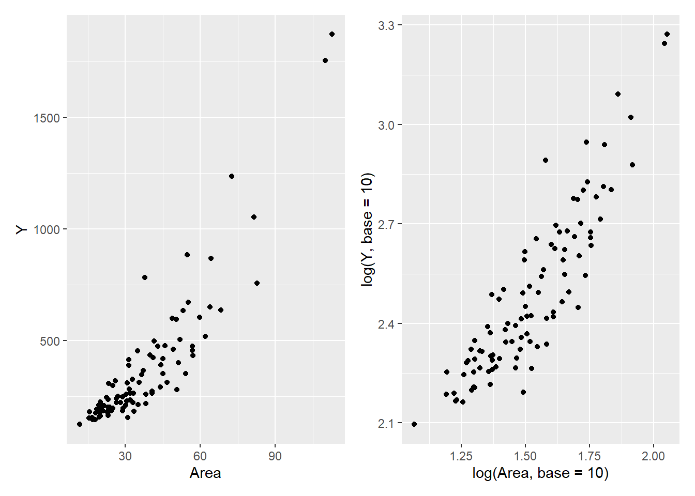
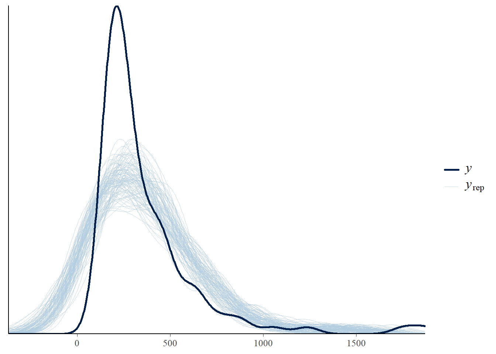
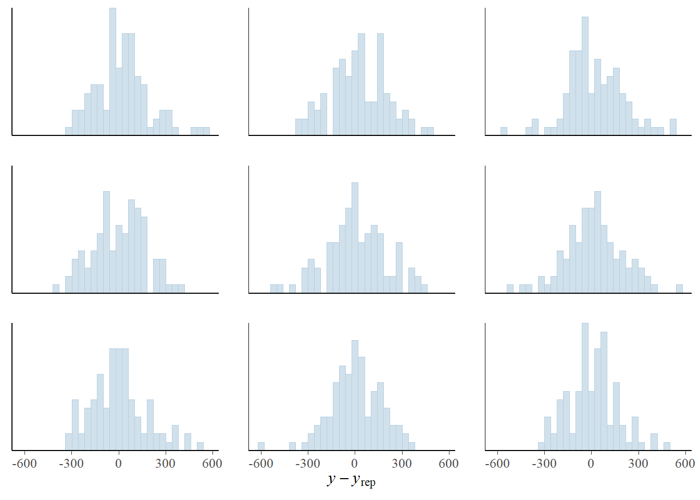
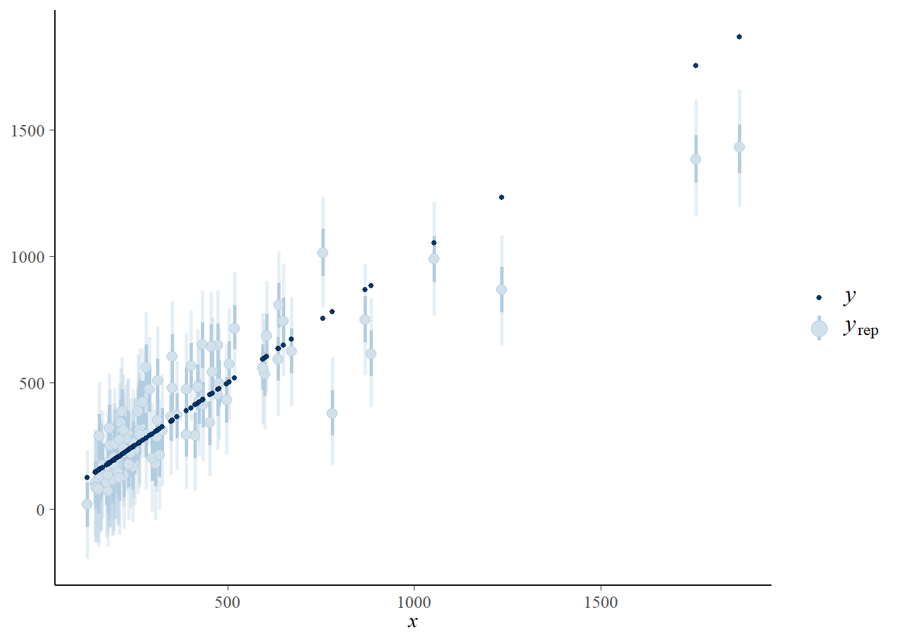
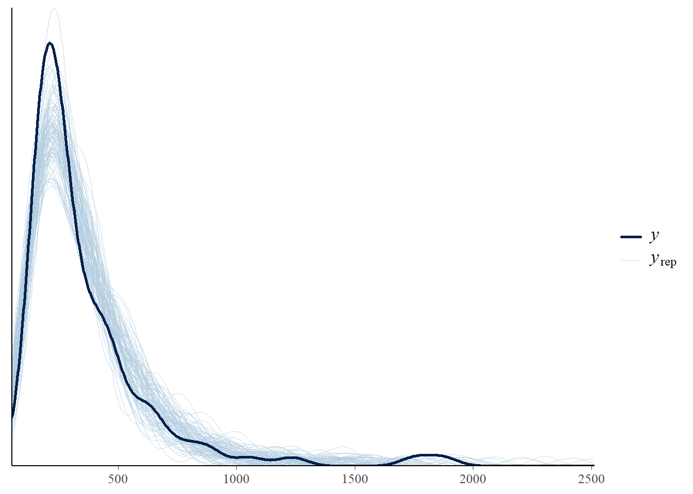
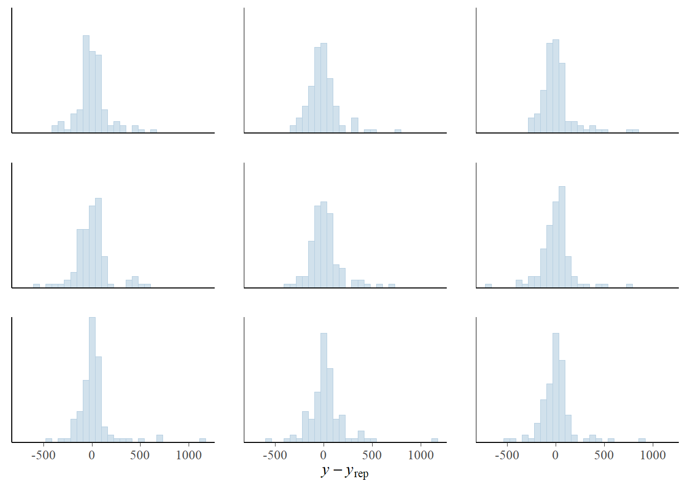
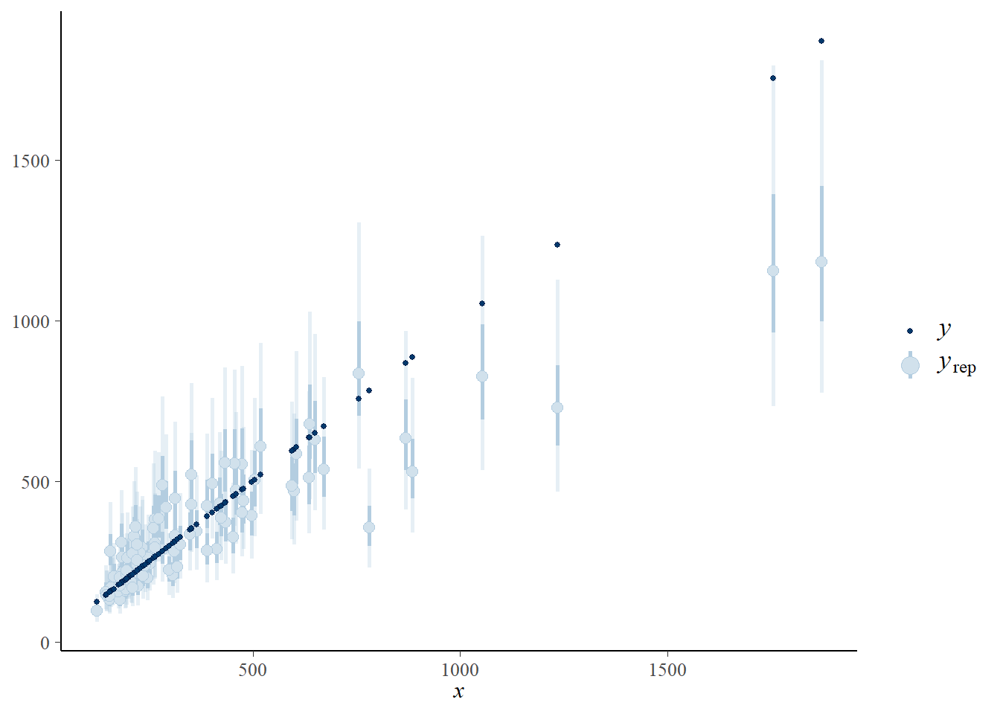
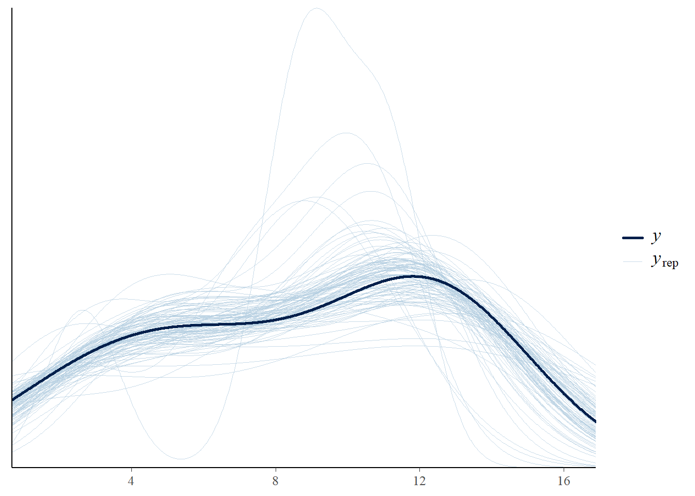
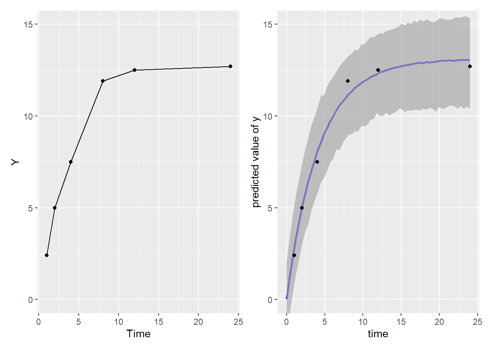

library(tidyverse)
library(cmdstanr)
library(tidybayes)
library(bayesplot)
library(ggthemes)
library(patchwork)
library(easystats)Chapter 7
7.1 log transforamtion
Import the data
df <- read_csv("https://raw.githubusercontent.com/MatsuuraKentaro/Bayesian_Statistical_Modeling_with_Stan_R_and_Python/refs/heads/master/chap07/input/data-rental.csv")Rows: 100 Columns: 2
── Column specification ────────────────────────────────────────────────────────
Delimiter: ","
dbl (2): Y, Area
ℹ Use `spec()` to retrieve the full column specification for this data.
ℹ Specify the column types or set `show_col_types = FALSE` to quiet this message.Figure 1
fig_left <- ggplot(df, aes(x = Area, y = Y)) +
geom_point()
fig_right <- ggplot(df, aes(x = log(Area, base = 10), y = log(Y, base = 10))) +
geom_point()
fig_left | fig_right
$$
Stan model for Formula 7.1
data {
int<lower=0> N;
vector[N] Y;
vector[N] X;
int Np;
vector[Np] Xp;
}
parameters {
vector[2] b; //b[1] intercept, b[2] slope
real<lower=0> sigma;
}
transformed parameters{
vector[N] mu = b[1] + b[2]*X;
}
model {
Y ~ normal(mu, sigma);
}
generated quantities{
array[N] real yp_n = normal_rng(mu, sigma);
array[N] real yp_np = normal_rng(b[1] + b[2]*Xp, sigma);
}Np <- 50
Xp <- seq(from = 10, to = 120, length = Np)
stan_data7.1 <- list(
N = nrow(df),
Y = df$Y,
X = df$Area,
Np = Np,
Xp = Xp
)
model_7.1 <- cmdstan_model(stan_file = "./model/model7-1.stan")
fit_7.1 <- model_7.1$sample(
data = stan_data7.1,
seed = 1125,
refresh = 1000
)Running MCMC with 4 sequential chains...
Chain 1 Iteration: 1 / 2000 [ 0%] (Warmup)
Chain 1 Iteration: 1000 / 2000 [ 50%] (Warmup)
Chain 1 Iteration: 1001 / 2000 [ 50%] (Sampling)
Chain 1 Iteration: 2000 / 2000 [100%] (Sampling)
Chain 1 finished in 0.2 seconds.
Chain 2 Iteration: 1 / 2000 [ 0%] (Warmup)
Chain 2 Iteration: 1000 / 2000 [ 50%] (Warmup)
Chain 2 Iteration: 1001 / 2000 [ 50%] (Sampling)
Chain 2 Iteration: 2000 / 2000 [100%] (Sampling)
Chain 2 finished in 0.2 seconds.
Chain 3 Iteration: 1 / 2000 [ 0%] (Warmup)
Chain 3 Iteration: 1000 / 2000 [ 50%] (Warmup)
Chain 3 Iteration: 1001 / 2000 [ 50%] (Sampling)
Chain 3 Iteration: 2000 / 2000 [100%] (Sampling)
Chain 3 finished in 0.2 seconds.
Chain 4 Iteration: 1 / 2000 [ 0%] (Warmup)
Chain 4 Iteration: 1000 / 2000 [ 50%] (Warmup)
Chain 4 Iteration: 1001 / 2000 [ 50%] (Sampling)
Chain 4 Iteration: 2000 / 2000 [100%] (Sampling)
Chain 4 finished in 0.2 seconds.
All 4 chains finished successfully.
Mean chain execution time: 0.2 seconds.
Total execution time: 1.6 seconds.fit_7.1$summary()# A tibble: 254 × 10
variable mean median sd mad q5 q95 rhat ess_bulk ess_tail
<chr> <dbl> <dbl> <dbl> <dbl> <dbl> <dbl> <dbl> <dbl> <dbl>
1 lp__ -532. -532. 1.28 1.01 -534. -531. 1.00 1514. 2116.
2 b[1] -148. -148. 29.0 29.1 -195. -101. 1.00 1421. 1518.
3 b[2] 14.0 14.0 0.701 0.735 12.9 15.1 1.00 1457. 2009.
4 sigma 131. 131. 9.72 9.60 117. 148. 1.01 2114. 2020.
5 mu[1] 421. 420. 13.6 13.0 399. 443. 1.00 5423. 3098.
6 mu[2] 718. 718. 22.1 21.8 682. 754. 1.00 2694. 2949.
7 mu[3] 623. 623. 18.5 18.3 593. 653. 1.00 3394. 3265.
8 mu[4] 646. 646. 19.3 19.2 615. 678. 1.00 3175. 3138.
9 mu[5] 646. 646. 19.3 19.2 615. 678. 1.00 3175. 3138.
10 mu[6] 69.0 68.9 19.9 19.6 36.8 102. 1.00 1622. 2052.
# ℹ 244 more rows$$
Np <- 50
Xp <- seq(10, 120, length = Np)
stan_data7.1log <- list(
N = nrow(df),
Y = log(df$Y, base = 10),
X = log(df$Area, base = 10),
Np = Np,
Xp = log(Xp, base = 10)
)
model_7.1log <- cmdstan_model(stan_file = "./model/model7-1.stan")
fit_7.1log <- model_7.1log$sample(
data = stan_data7.1log,
seed = 1125,
refresh = 1000
)Running MCMC with 4 sequential chains...
Chain 1 Iteration: 1 / 2000 [ 0%] (Warmup)
Chain 1 Iteration: 1000 / 2000 [ 50%] (Warmup)
Chain 1 Iteration: 1001 / 2000 [ 50%] (Sampling)
Chain 1 Iteration: 2000 / 2000 [100%] (Sampling)
Chain 1 finished in 0.2 seconds.
Chain 2 Iteration: 1 / 2000 [ 0%] (Warmup)
Chain 2 Iteration: 1000 / 2000 [ 50%] (Warmup)
Chain 2 Iteration: 1001 / 2000 [ 50%] (Sampling)
Chain 2 Iteration: 2000 / 2000 [100%] (Sampling)
Chain 2 finished in 0.2 seconds.
Chain 3 Iteration: 1 / 2000 [ 0%] (Warmup) Chain 3 Informational Message: The current Metropolis proposal is about to be rejected because of the following issue:Chain 3 Exception: normal_lpdf: Scale parameter is 0, but must be positive! (in 'C:/Users/d497j944/AppData/Local/Temp/Rtmps73kYY/model-36886abf23e4.stan', line 20, column 2 to column 24)Chain 3 If this warning occurs sporadically, such as for highly constrained variable types like covariance matrices, then the sampler is fine,Chain 3 but if this warning occurs often then your model may be either severely ill-conditioned or misspecified.Chain 3 Chain 3 Iteration: 1000 / 2000 [ 50%] (Warmup)
Chain 3 Iteration: 1001 / 2000 [ 50%] (Sampling)
Chain 3 Iteration: 2000 / 2000 [100%] (Sampling)
Chain 3 finished in 0.2 seconds.
Chain 4 Iteration: 1 / 2000 [ 0%] (Warmup)
Chain 4 Iteration: 1000 / 2000 [ 50%] (Warmup)
Chain 4 Iteration: 1001 / 2000 [ 50%] (Sampling)
Chain 4 Iteration: 2000 / 2000 [100%] (Sampling)
Chain 4 finished in 0.2 seconds.
All 4 chains finished successfully.
Mean chain execution time: 0.2 seconds.
Total execution time: 1.5 seconds.fit_7.1log$summary()# A tibble: 254 × 10
variable mean median sd mad q5 q95 rhat ess_bulk
<chr> <dbl> <dbl> <dbl> <dbl> <dbl> <dbl> <dbl> <dbl>
1 lp__ 168. 168. 1.27 1.01 165. 169. 1.00 1306.
2 b[1] 0.798 0.797 0.0883 0.0900 0.653 0.946 1.00 1139.
3 b[2] 1.11 1.11 0.0576 0.0594 1.01 1.20 1.00 1139.
4 sigma 0.112 0.111 0.00808 0.00793 0.0992 0.125 1.00 1501.
5 mu[1] 2.58 2.58 0.0124 0.0122 2.56 2.60 1.00 3370.
6 mu[2] 2.78 2.78 0.0193 0.0195 2.75 2.82 1.00 1655.
7 mu[3] 2.73 2.73 0.0170 0.0171 2.70 2.76 1.00 1857.
8 mu[4] 2.74 2.74 0.0176 0.0178 2.71 2.77 1.00 1796.
9 mu[5] 2.74 2.74 0.0176 0.0178 2.71 2.77 1.00 1796.
10 mu[6] 2.12 2.12 0.0221 0.0221 2.08 2.15 1.00 1357.
# ℹ 244 more rows
# ℹ 1 more variable: ess_tail <dbl>PP check
Non-transformed model - not a good fit
yrep <- fit_7.1$draws(variables = "yp_n", format = "draws_matrix")
indice <- sample(nrow(yrep), 100)
yrep_small <- yrep[indice, ]
ppc_dens_overlay(
y = stan_data7.1$Y,
yrep = yrep_small
)
ppc_error_hist(
y = stan_data7.1$Y,
yrep = yrep_small[1:9, ]
)`stat_bin()` using `bins = 30`. Pick better value with `binwidth`.
ppc_intervals(
y = stan_data7.1$Y,
yrep = yrep,
x = stan_data7.1$Y
)
log transformed - better fit.
yrep <- fit_7.1log$draws(variables = "yp_n", format = "draws_matrix")
yrep_back <- apply(yrep, 2, function(x) 10^x)
indice <- sample(nrow(yrep), 100)
yrep_small <- yrep_back[indice, ]
ppc_dens_overlay(
y = 10^stan_data7.1log$Y,
yrep = yrep_small
)
ppc_error_hist(
y = 10^stan_data7.1log$Y,
yrep = yrep_small[1:9, ]
)`stat_bin()` using `bins = 30`. Pick better value with `binwidth`.
ppc_intervals(
y = 10^stan_data7.1log$Y,
yrep = yrep_back,
x = 10^stan_data7.1log$Y
)
7.2 non-linear model
7.2.1 Exponential Function
Import the data
df <- read_csv("https://raw.githubusercontent.com/MatsuuraKentaro/Bayesian_Statistical_Modeling_with_Stan_R_and_Python/refs/heads/master/chap07/input/data-conc.csv")Rows: 6 Columns: 2
── Column specification ────────────────────────────────────────────────────────
Delimiter: ","
dbl (2): Time, Y
ℹ Use `spec()` to retrieve the full column specification for this data.
ℹ Specify the column types or set `show_col_types = FALSE` to quiet this message.Model Formula 7.3 \[ \begin{aligned} Y[t] \sim N(a \{1-exp(-bX[t\}, \sigma) && t = 1,...,T \end{aligned} \]
data {
int T;
vector[T] X;
vector[T] Y;
int Tp;
vector[Tp] Xp;
}
parameters {
real<lower=0, upper=100> a;
real<lower=0, upper=5> b;
real<lower=0> sigma;
}
model {
Y ~ normal(a*(1-exp(-b*X)), sigma);
}
generated quantities {
array[T] real yrep = normal_rng(a*(1-exp(-b*X)), sigma); //for pp_check
array[Tp] real yp = normal_rng(a*(1-exp(-b*Xp)), sigma); //for prediction
}Tp <- 60
Xp <- seq(from=0, to=24, length=Tp)
stan_data7.3 <- list(
T = nrow(df),
X = df$Time,
Y = df$Y,
Tp = Tp,
Xp = Xp
)model_7.3 <- cmdstan_model("./model/model7-3.stan")Warning in readLines(stan_file): incomplete final line found on
'./model/model7-3.stan'fit_7.3 <- model_7.3$sample(
data =stan_data7.3,
seed = 123,
parallel_chains = 4,
refresh = 1000
)Running MCMC with 4 parallel chains...
Chain 1 Iteration: 1 / 2000 [ 0%] (Warmup)
Chain 1 Iteration: 1000 / 2000 [ 50%] (Warmup)
Chain 1 Iteration: 1001 / 2000 [ 50%] (Sampling)
Chain 1 Iteration: 2000 / 2000 [100%] (Sampling)
Chain 2 Iteration: 1 / 2000 [ 0%] (Warmup)
Chain 2 Iteration: 1000 / 2000 [ 50%] (Warmup)
Chain 2 Iteration: 1001 / 2000 [ 50%] (Sampling)
Chain 2 Iteration: 2000 / 2000 [100%] (Sampling)
Chain 3 Iteration: 1 / 2000 [ 0%] (Warmup)
Chain 3 Iteration: 1000 / 2000 [ 50%] (Warmup)
Chain 3 Iteration: 1001 / 2000 [ 50%] (Sampling)
Chain 4 Iteration: 1 / 2000 [ 0%] (Warmup)
Chain 4 Iteration: 1000 / 2000 [ 50%] (Warmup)
Chain 4 Iteration: 1001 / 2000 [ 50%] (Sampling)
Chain 1 finished in 0.1 seconds.
Chain 2 finished in 0.1 seconds.
Chain 3 Iteration: 2000 / 2000 [100%] (Sampling)
Chain 3 finished in 0.1 seconds.
Chain 4 Iteration: 2000 / 2000 [100%] (Sampling)
Chain 4 finished in 0.1 seconds.
All 4 chains finished successfully.
Mean chain execution time: 0.1 seconds.
Total execution time: 0.3 seconds.fit_7.3$summary()# A tibble: 70 × 10
variable mean median sd mad q5 q95 rhat ess_bulk ess_tail
<chr> <dbl> <dbl> <dbl> <dbl> <dbl> <dbl> <dbl> <dbl> <dbl>
1 lp__ -0.0822 0.393 1.77 1.44 -3.66 1.87 1.00 757. 645.
2 a 13.1 13.1 0.814 0.590 11.9 14.3 1.00 1041. 774.
3 b 0.249 0.238 0.112 0.0297 0.187 0.319 1.00 980. 626.
4 sigma 0.853 0.709 0.560 0.296 0.398 1.76 1.00 795. 894.
5 yrep[1] 2.81 2.79 1.08 0.766 1.23 4.36 1.00 3424. 2224.
6 yrep[2] 4.99 4.97 1.18 0.786 3.36 6.71 1.00 2952. 1886.
7 yrep[3] 8.07 8.05 1.17 0.827 6.50 9.73 1.00 3454. 2688.
8 yrep[4] 11.1 11.1 1.13 0.811 9.50 12.7 1.00 3734. 2159.
9 yrep[5] 12.3 12.3 1.18 0.812 10.6 13.9 1.00 3195. 1657.
10 yrep[6] 13.0 13.1 1.26 0.893 11.2 14.8 1.00 2229. 1624.
# ℹ 60 more rowspp check
yrep_matrix <- fit_7.3$draws(variables = "yrep", format = "draws_matrix")
yrep_small <- yrep_matrix[sample(nrow(yrep_matrix), 100), ]
ppc_dens_overlay(
y = stan_data7.3$Y,
yrep = yrep_small
)
Figure 7.5
fig7.5_left <- ggplot(df, aes(x = Time, y = Y)) +
geom_point() +
geom_line() +
coord_cartesian(
ylim = c(0,15)
)
yp_summary <- fit_7.3$draws(variables = "yp", format = "draws_df") |>
spread_draws(yp[i]) |>
summarise(
median = median(yp),
lower = quantile(yp, 0.025),
upper = quantile(yp, 0.975)
) |>
mutate(
time = Xp
)
fig7.5_right <- ggplot(yp_summary, aes(x = time, y = median)) +
geom_line(color = "blue", size = 1) +
geom_ribbon(aes(ymin = lower, ymax = upper), fill = "darkgrey", alpha = 0.7) +
geom_point(data = df, aes(x = Time, y = Y), color = "black") +
labs(
x = "time",
y = "predicted value of y"
) +
coord_cartesian(
ylim = c(0,15)
)Warning: Using `size` aesthetic for lines was deprecated in ggplot2 3.4.0.
ℹ Please use `linewidth` instead.fig7.5_left | fig7.5_right